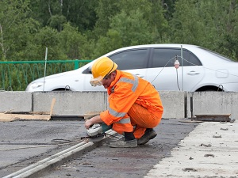
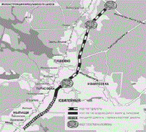

Напоминаем, что Вотчина расположена в 140 км от Москвы, во Владимирской области, недалеко от городов Кольчугино и Юрьев-Польский. Доехать в поселок можно по Ярославскому, Горьковскому, Щелковскому шоссе.
От основных шоссе, в поселок ведет новая подъездная дорога, которая обеспечивает комфортный подъезд в поселок с трассы – круглый год.
Как Вы знаете, в данный момент проходит реконструкция Ярославского шоссе. Трасса преобразится и добираться по ней в нужные пункты станет гораздо быстрее, легче и приятней.
Мы решили поделиться с вами последними новостями с "места работ"!
Итак, первая эстакада, построенная в ходе реконструкции Ярославского шоссе – в районе выезда с улицы Вешних Вод – заработала с 8 июля.
Транспорт уже идёт по трём полосам в каждую сторону. При движении в сторону области основной ход Ярославки всё ещё упирается в строительство второй эстакады (на пересечении с Малыгинским проездом). А вот при движении в центр ситуация изменилась кардинально. Стало свободнее, под новой эстакадой открыли по постоянной схеме и первый разворот. Теперь, при движении со стороны области тут можно развернуться, вообще не останавливаясь на светофорах. В ближайшем будущем под эстакадой должен заработать и второй разворот – при движении из центра. Общественный транспорт с Северянинского путепровода на дублёр Ярославки теперь уходит без помех!
В дальнейшем,весь общественный транспорт будет идти только по дублерам, где для них оборудуют выделенные полосы четырехметровой ширины в каждую сторону.
Шесть центральных полос будут отданы автомобилистам. Одна из них в час пик будет реверсивной — увеличивая по утрам пропускную способность шоссе по направлению в город, а по вечерам — в область. Автобусы получат еще 54 заездных кармана. 500 парковочных мест строится и для автомобилистов. В конечном счете, все это позволит увеличить пропускную способность трассы на 25%.
Реконструкция Ярославки в области началась позже, чем в Москве. Но в этом году активные работы развернулись сразу на нескольких участках.
От МКАД до Мытищинской развязки, Ярославское шоссе расширят с 3 до 5 полос в каждом направлении. Да ещё с обеих сторон устроят 2-полосные дублёры для поворотов – будет по 7 рядов в каждую сторону! Расширение уже идёт: основная часть работ развернулась слева от действующей трассы, если смотреть со стороны Москвы. Реконструкцию Ярославки до Мытищ планируют завершить в конце 2015 или в самом начале 2016 года.
Старый путепровод над монинской железнодорожной веткой (почти сразу за Королёвской развязкой) расширят с 3 до 5 полос (а по сути построят на его месте новый путепровод, но не останавливая движения). Эти работы уже идут полным ходом. Строят новую дорогу и в обход Тарасовки. Этот участок Ярославки (от Королёвской развязки до конца обхода Тарасовки) должны закончить в первой половине 2015 года.
На трассе планируется сделать еще три развязки-эстакады, построить 8 внеуличных пешеходных мостов-переходов. В результате трасса станет бессветофорной от МКАДа до Московского малого кольца и ее пропускная способность вырастет на 40-50%.
Основные строительные работы запланированы на 2013 год, в конце 2014 — начале 2015 года приступят к перекладке асфальта.
Ремонтные и строительные работы на Ярославке идут круглосуточно!
Ждем Вас в нашем поселке круглый год! Позвоните нам по телефону
В сентябре 2013 года появилась новая возможность – приобрести участки с лесом за ПОЛцены, подробности здесь
|  |
Error: Undefined variable: category_text File: /var/www/votchina.su/data/www/votchina.ru/templates/template-news.php (65)